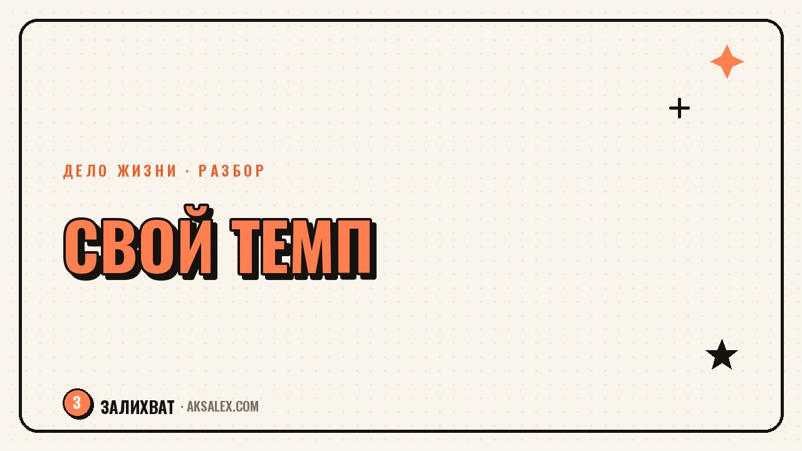

Как перестать сравнивать себя с другими и вернуть свой темп

Открываешь ленту - и там ровесник уже открыл вторую точку, бывший однокурсник получил повышение, а знакомая блогерша выросла в разы за месяц. Своя скорость на этом фоне вдруг начинает казаться слишком медленной, хотя минуту назад ты был доволен тем, как продвигаешься. Сравнение с другими - один из самых надёжных способов испортить себе настроение и мотивацию одновременно. Разберём, откуда берётся эта привычка и как вернуть себе ощущение собственного темпа, не отказываясь от амбиций.
Почему сравнение цепляет именно сейчас
Раньше сравнивать себя можно было в основном с соседями и коллегами - узким кругом людей, чью реальную жизнь ты хоть немного видел изнутри. Сейчас в одной ленте соседствуют сотни чужих историй успеха, причём в самой выгодной их версии: с этапом наибольшего роста, без черновиков и провалов, которые к этому привели.
Мозг не делает поправку на то, что видит витрину, а не закулисье. Он честно считывает сигнал «другие впереди» и включает тревогу, будто это реальная угроза. От этого и возникает ощущение, что ты отстаёшь, хотя объективно у тебя может быть вполне устойчивый и разумный темп для своих обстоятельств.
Ты сравниваешь свою черновую версию с чужим финальным монтажом. Это никогда не будет честным сравнением, сколько бы ни старался.
Чем вредно постоянное сравнение
Снижается мотивация вместо того, чтобы расти
Логично ожидать, что чужой успех подстегнёт тебя работать усерднее. На практике часто получается наоборот: вместо энергии появляется ощущение бессмысленности («зачем стараться, если у других и так получается быстрее»). Мотивация от зависти и тревоги редко бывает устойчивой - она выгорает за несколько дней и оставляет после себя апатию.
Решения принимаются не под свою ситуацию
Когда ориентируешься на чужой темп, легко начать копировать чужие шаги, которые не подходят твоим обстоятельствам. У знакомого, может, нет детей, есть накопления или другой стартовый капитал знаний - а ты пытаешься повторить его скорость, не имея его условий, и закономерно не успеваешь.
Как отличить полезное сравнение от разрушительного
Сравнение не всегда вредно - иногда оно даёт полезные ориентиры. Разница в том, что делает с тобой информация после того, как ты её увидел.
- Полезное сравнение оставляет конкретный вопрос: «что из этого я мог бы попробовать у себя»
- Разрушительное сравнение оставляет только общее чувство «я хуже» без конкретных выводов
- Полезное сравнение работает с методом или подходом, а не с человеком целиком
- Разрушительное сравнение обесценивает весь твой прошлый прогресс одним взглядом на чужую ленту
Если после просмотра чужого успеха в голове только смутная тревога без единой конкретной идеи, это верный признак, что сравнение работает против тебя, а не на пользу.
Упражнения, которые возвращают ощущение своего темпа
Дневник маленьких шагов
Раз в неделю записывай три конкретных шага, которые сделал именно ты, без сравнения с кем-либо. Через месяц перечитывание такого списка честно показывает движение, которое незаметно день ко дню, но заметно на дистанции - и это движение никак не зависит от того, кто и с какой скоростью идёт рядом.
Пауза перед реакцией
Когда ловишь себя на мысли «а вот у него уже», не спеши с выводами. Спроси себя: сколько лет этот человек к этому шёл, что я реально знаю о его условиях старта, и что из его пути применимо конкретно ко мне. Обычно после трёх таких вопросов острота сравнения спадает сама.
Ограничение источников тревоги
Если конкретный аккаунт или человек стабильно вызывает тревожное сравнение, а не вдохновение, честнее отписаться или скрыть его в ленте, чем продолжать себя мучить. Это не про слабость, а про управление собственным вниманием - ты выбираешь, что видеть каждый день.
Как выглядит здоровый ориентир вместо сравнения с другими
Вместо чужого темпа полезнее сравнивать себя с собой в прошлом - через месяц, полгода, год. Это единственное сравнение, где у тебя есть полная картина условий, а не только красивая витрина.
| Что сравниваешь | Что получаешь |
|---|---|
| Себя с успешным незнакомцем в ленте | Тревогу, зависть, ощущение бессмысленности своих усилий |
| Себя сегодняшнего с собой полгода назад | Честную картину прогресса и конкретные идеи, что улучшить дальше |
| Свой метод с чужим подходом (без сравнения личностей) | Новые идеи и инструменты, которые можно применить у себя |
| Свои цели с чужими достижениями | Ложное ощущение отставания, которое не учитывает разницу условий |
Что делать, если старая привычка сравнивать возвращается
Не стоит ждать, что привычка исчезнет раз и навсегда после одного осознания - скорее всего, она будет возвращаться в моменты усталости или неуверенности, и это нормально. Важно не ругать себя за откат, а просто снова возвращаться к вопросам из предыдущего раздела.
Полезно заранее заметить свои личные триггеры - конкретное время суток, конкретные соцсети или конкретных людей, после которых сравнение цепляет особенно сильно. Зная триггер заранее, проще либо ограничить его, либо подготовиться к нему осознанно, а не реагировать на автомате.
Частые вопросы
Почему я постоянно сравниваю себя с другими в соцсетях?
Лента показывает лучшие моменты чужой жизни без черновиков и провалов, а мозг воспринимает это как честную картину. Из-за этого разрыв между твоей реальностью и чужой витриной кажется больше, чем есть на самом деле.
Как перестать сравнивать себя с другими на работе?
Переключись со сравнения результатов на сравнение условий и метода: у коллег могут быть другой опыт, ресурсы или обстоятельства. Отслеживай собственный прогресс во времени, а не место в общем рейтинге.
Что делать, если сравнение с другими демотивирует полностью?
Временно ограничь источники, которые вызывают эту реакцию, и переключись на дневник собственных маленьких шагов. Это возвращает ощущение движения без привязки к чужой скорости.
Можно ли вообще избавиться от привычки сравнивать себя навсегда?
Полностью убрать эту реакцию сложно, она встроена в психику эволюционно. Но можно научиться быстрее её замечать и не давать ей управлять решениями - это реалистичная и достижимая цель.
Как найти свой темп, если кажется, что все вокруг двигаются быстрее?
Начни с честного списка своих реальных условий - времени, ресурсов, обязательств - и строй ожидания от себя исходя из них, а не из чужих условий. Свой темп - это не медленный темп, а темп, который соответствует именно твоей ситуации.
Раз тема оказалась полезной, вот что почитать следующим. Дело жизни редко приходит извне готовым. Чаще его собирают из того, что ты и так умеешь, просто раньше не смотрел на это как на актив.
Читать статью →а не вручную